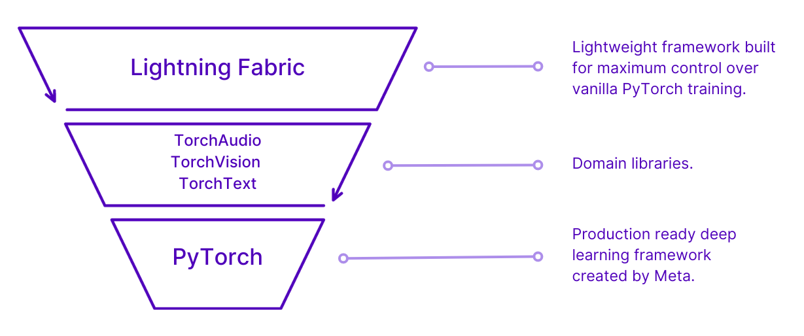

PyTorch Lightning Fabric Code Guide

I’ve created a comprehensive code guide for PyTorch Lightning Fabric that covers everything from basic setup to advanced distributed training features
Table of Contents
Introduction
Lightning Fabric is a lightweight PyTorch wrapper that provides essential training utilities without the overhead of the full Lightning framework. It’s perfect when you want more control over your training loop while still benefiting from distributed training, mixed precision, and other optimizations.
Installation
pip install lightning
# or
pip install pytorch-lightningBasic Setup
Minimal Example
import torch
import torch.nn as nn
from lightning.fabric import Fabric
# Initialize Fabric
fabric = Fabric()
# Your model
model = nn.Linear(10, 1)
optimizer = torch.optim.SGD(model.parameters(), lr=0.01)
# Setup model and optimizer with Fabric
model, optimizer = fabric.setup(model, optimizer)
# Training step
for batch in dataloader:
optimizer.zero_grad()
loss = model(batch).mean()
fabric.backward(loss)
optimizer.step()Core Components
1. Fabric Initialization
from lightning.fabric import Fabric
# Basic initialization
fabric = Fabric()
# With specific configuration
fabric = Fabric(
accelerator="gpu", # "cpu", "gpu", "tpu", "auto"
strategy="ddp", # "ddp", "fsdp", "deepspeed", etc.
devices=2, # Number of devices
precision="16-mixed", # "32", "16-mixed", "bf16-mixed"
plugins=[], # Custom plugins
)
# Launch the fabric
fabric.launch()2. Model and Optimizer Setup
import torch
import torch.nn as nn
class SimpleModel(nn.Module):
def __init__(self, input_size, hidden_size, output_size):
super().__init__()
self.fc1 = nn.Linear(input_size, hidden_size)
self.fc2 = nn.Linear(hidden_size, output_size)
self.relu = nn.ReLU()
self.dropout = nn.Dropout(0.1)
def forward(self, x):
x = self.relu(self.fc1(x))
x = self.dropout(x)
return self.fc2(x)
# Create model and optimizer
model = SimpleModel(784, 128, 10)
optimizer = torch.optim.Adam(model.parameters(), lr=1e-3)
scheduler = torch.optim.lr_scheduler.StepLR(optimizer, step_size=10, gamma=0.1)
# Setup with Fabric
model, optimizer = fabric.setup(model, optimizer)
scheduler = fabric.setup(scheduler)3. DataLoader Setup
from torch.utils.data import DataLoader, TensorDataset
# Create your dataset
dataset = TensorDataset(torch.randn(1000, 784), torch.randint(0, 10, (1000,)))
dataloader = DataLoader(dataset, batch_size=32, shuffle=True)
# Setup with Fabric
dataloader = fabric.setup_dataloaders(dataloader)Training Loop
Basic Training Loop
def train_epoch(fabric, model, optimizer, dataloader, criterion):
model.train()
total_loss = 0
for batch_idx, (data, target) in enumerate(dataloader):
# Zero gradients
optimizer.zero_grad()
# Forward pass
output = model(data)
loss = criterion(output, target)
# Backward pass with Fabric
fabric.backward(loss)
# Optimizer step
optimizer.step()
total_loss += loss.item()
# Log every 100 batches
if batch_idx % 100 == 0:
fabric.print(f'Batch {batch_idx}, Loss: {loss.item():.4f}')
return total_loss / len(dataloader)
# Training loop
criterion = nn.CrossEntropyLoss()
for epoch in range(10):
avg_loss = train_epoch(fabric, model, optimizer, dataloader, criterion)
scheduler.step()
fabric.print(f'Epoch {epoch}: Average Loss = {avg_loss:.4f}')Training with Validation
def validate(fabric, model, val_dataloader, criterion):
model.eval()
total_loss = 0
correct = 0
total = 0
with torch.no_grad():
for data, target in val_dataloader:
output = model(data)
loss = criterion(output, target)
total_loss += loss.item()
pred = output.argmax(dim=1)
correct += (pred == target).sum().item()
total += target.size(0)
accuracy = correct / total
avg_loss = total_loss / len(val_dataloader)
return avg_loss, accuracy
# Complete training with validation
train_loader = fabric.setup_dataloaders(train_dataloader)
val_loader = fabric.setup_dataloaders(val_dataloader)
for epoch in range(num_epochs):
# Training
train_loss = train_epoch(fabric, model, optimizer, train_loader, criterion)
# Validation
val_loss, val_acc = validate(fabric, model, val_loader, criterion)
fabric.print(f'Epoch {epoch}:')
fabric.print(f' Train Loss: {train_loss:.4f}')
fabric.print(f' Val Loss: {val_loss:.4f}')
fabric.print(f' Val Acc: {val_acc:.4f}')
scheduler.step()Multi-GPU Training
Distributed Data Parallel (DDP)
# Initialize Fabric for multi-GPU
fabric = Fabric(
accelerator="gpu",
strategy="ddp",
devices=4, # Use 4 GPUs
)
fabric.launch()
# All-reduce for metrics across processes
def all_reduce_mean(fabric, tensor):
"""Average tensor across all processes"""
fabric.all_reduce(tensor, reduce_op="mean")
return tensor
# Training with distributed metrics
def train_distributed(fabric, model, optimizer, dataloader, criterion):
model.train()
total_loss = torch.tensor(0.0, device=fabric.device)
num_batches = 0
for data, target in dataloader:
optimizer.zero_grad()
output = model(data)
loss = criterion(output, target)
fabric.backward(loss)
optimizer.step()
total_loss += loss.detach()
num_batches += 1
# Average loss across all processes
avg_loss = total_loss / num_batches
avg_loss = all_reduce_mean(fabric, avg_loss)
return avg_loss.item()Fully Sharded Data Parallel (FSDP)
# For very large models
fabric = Fabric(
accelerator="gpu",
strategy="fsdp",
devices=8,
precision="bf16-mixed"
)
fabric.launch()
# FSDP automatically shards model parameters
model, optimizer = fabric.setup(model, optimizer)Mixed Precision
Automatic Mixed Precision
# Enable mixed precision
fabric = Fabric(precision="16-mixed") # or "bf16-mixed"
fabric.launch()
# Training remains the same - Fabric handles precision automatically
def train_with_amp(fabric, model, optimizer, dataloader, criterion):
model.train()
for data, target in dataloader:
optimizer.zero_grad()
# Forward pass (automatically uses mixed precision)
output = model(data)
loss = criterion(output, target)
# Backward pass (handles gradient scaling)
fabric.backward(loss)
optimizer.step()Manual Precision Control
from lightning.fabric.utilities import rank_zero_only
@rank_zero_only
def log_model_precision(model):
"""Log model parameter precisions (only on rank 0)"""
for name, param in model.named_parameters():
print(f"{name}: {param.dtype}")
# Check model precision after setup
model, optimizer = fabric.setup(model, optimizer)
log_model_precision(model)Logging and Checkpointing
Checkpointing
import os
def save_checkpoint(fabric, model, optimizer, epoch, loss, path):
"""Save model checkpoint"""
checkpoint = {
"model": model,
"optimizer": optimizer,
"epoch": epoch,
"loss": loss
}
fabric.save(path, checkpoint)
def load_checkpoint(fabric, path):
"""Load model checkpoint"""
checkpoint = fabric.load(path)
return checkpoint
# Save checkpoint
checkpoint_path = f"checkpoint_epoch_{epoch}.ckpt"
save_checkpoint(fabric, model, optimizer, epoch, train_loss, checkpoint_path)
# Load checkpoint
if os.path.exists("checkpoint_epoch_5.ckpt"):
checkpoint = load_checkpoint(fabric, "checkpoint_epoch_5.ckpt")
model = checkpoint["model"]
optimizer = checkpoint["optimizer"]
start_epoch = checkpoint["epoch"] + 1Logging with External Loggers
from lightning.fabric.loggers import TensorBoardLogger, CSVLogger
# Initialize logger
logger = TensorBoardLogger("logs", name="my_experiment")
# Setup Fabric with logger
fabric = Fabric(loggers=[logger])
fabric.launch()
# Log metrics
def log_metrics(fabric, metrics, step):
for logger in fabric.loggers:
logger.log_metrics(metrics, step)
# Usage in training loop
for epoch in range(num_epochs):
train_loss = train_epoch(fabric, model, optimizer, train_loader, criterion)
val_loss, val_acc = validate(fabric, model, val_loader, criterion)
# Log metrics
metrics = {
"train_loss": train_loss,
"val_loss": val_loss,
"val_accuracy": val_acc,
"learning_rate": optimizer.param_groups[0]['lr']
}
log_metrics(fabric, metrics, epoch)Advanced Features
Custom Precision Plugin
from lightning.fabric.plugins import MixedPrecisionPlugin
# Custom precision configuration
precision_plugin = MixedPrecisionPlugin(
precision="16-mixed",
device="cuda",
scaler_kwargs={"init_scale": 2**16}
)
fabric = Fabric(plugins=[precision_plugin])Gradient Clipping
def train_with_grad_clipping(fabric, model, optimizer, dataloader, criterion, max_norm=1.0):
model.train()
for data, target in dataloader:
optimizer.zero_grad()
output = model(data)
loss = criterion(output, target)
fabric.backward(loss)
# Gradient clipping
fabric.clip_gradients(model, optimizer, max_norm=max_norm)
optimizer.step()Early Stopping
class EarlyStopping:
def __init__(self, patience=10, min_delta=0.001):
self.patience = patience
self.min_delta = min_delta
self.counter = 0
self.best_loss = float('inf')
def __call__(self, val_loss):
if val_loss < self.best_loss - self.min_delta:
self.best_loss = val_loss
self.counter = 0
else:
self.counter += 1
return self.counter >= self.patience
# Usage
early_stopping = EarlyStopping(patience=5)
for epoch in range(num_epochs):
train_loss = train_epoch(fabric, model, optimizer, train_loader, criterion)
val_loss, val_acc = validate(fabric, model, val_loader, criterion)
if early_stopping(val_loss):
fabric.print(f"Early stopping at epoch {epoch}")
breakBest Practices
1. Proper Fabric Launch
# Always use fabric.launch() for proper initialization
def main():
fabric = Fabric(accelerator="gpu", devices=2)
fabric.launch()
# Your training code here
model = create_model()
# ... rest of training
if __name__ == "__main__":
main()2. Rank-specific Operations
from lightning.fabric.utilities import rank_zero_only
@rank_zero_only
def save_model_artifacts(model, path):
"""Only save on rank 0 to avoid conflicts"""
torch.save(model.state_dict(), path)
@rank_zero_only
def print_training_info(epoch, loss):
"""Only print on rank 0 to avoid duplicate outputs"""
print(f"Epoch {epoch}, Loss: {loss}")3. Proper Device Management
# Let Fabric handle device placement
fabric = Fabric()
fabric.launch()
# Don't manually move to device - Fabric handles this
# BAD: model.to(device), data.to(device)
# GOOD: Let fabric.setup() handle device placement
model, optimizer = fabric.setup(model, optimizer)
dataloader = fabric.setup_dataloaders(dataloader)4. Memory Efficient Training
def memory_efficient_training(fabric, model, optimizer, dataloader, criterion):
model.train()
for batch_idx, (data, target) in enumerate(dataloader):
optimizer.zero_grad()
# Use gradient checkpointing for large models
if hasattr(model, 'gradient_checkpointing_enable'):
model.gradient_checkpointing_enable()
output = model(data)
loss = criterion(output, target)
fabric.backward(loss)
optimizer.step()
# Clear cache periodically
if batch_idx % 100 == 0:
torch.cuda.empty_cache()5. Complete Training Script Template
import torch
import torch.nn as nn
from torch.utils.data import DataLoader
from lightning.fabric import Fabric
from lightning.fabric.utilities import rank_zero_only
def create_model():
return nn.Sequential(
nn.Linear(784, 256),
nn.ReLU(),
nn.Linear(256, 128),
nn.ReLU(),
nn.Linear(128, 10)
)
def train_epoch(fabric, model, optimizer, dataloader, criterion):
model.train()
total_loss = 0
for data, target in dataloader:
optimizer.zero_grad()
output = model(data)
loss = criterion(output, target)
fabric.backward(loss)
optimizer.step()
total_loss += loss.item()
return total_loss / len(dataloader)
def main():
# Initialize Fabric
fabric = Fabric(
accelerator="auto",
strategy="auto",
devices="auto",
precision="16-mixed"
)
fabric.launch()
# Create model, optimizer, data
model = create_model()
optimizer = torch.optim.Adam(model.parameters(), lr=1e-3)
# Setup with Fabric
model, optimizer = fabric.setup(model, optimizer)
# Training loop
criterion = nn.CrossEntropyLoss()
for epoch in range(10):
avg_loss = train_epoch(fabric, model, optimizer, dataloader, criterion)
if fabric.is_global_zero:
print(f"Epoch {epoch}: Loss = {avg_loss:.4f}")
if __name__ == "__main__":
main()This guide covers the essential aspects of using Lightning Fabric for efficient PyTorch training. Fabric provides the perfect balance between control and convenience, making it ideal for researchers and practitioners who want distributed training capabilities without giving up flexibility in their training loops.